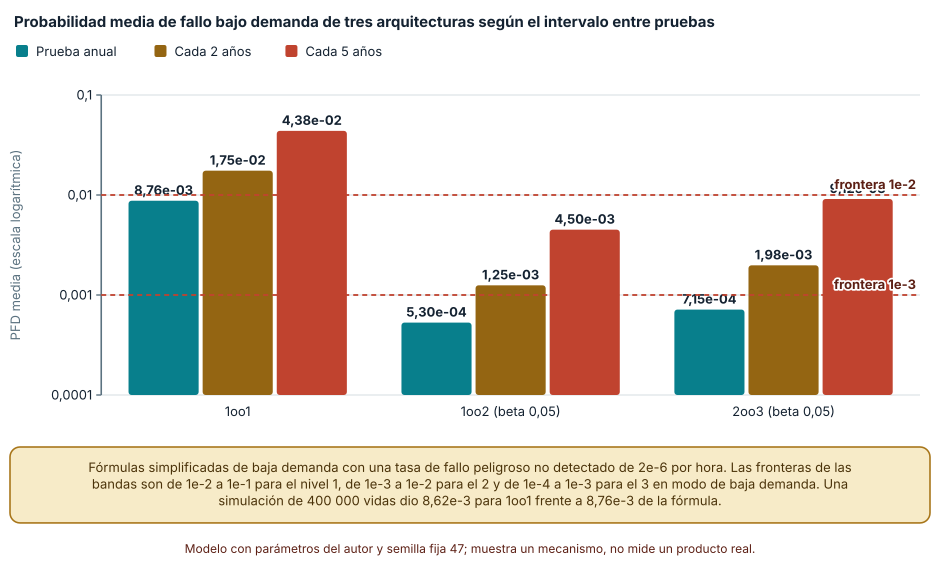
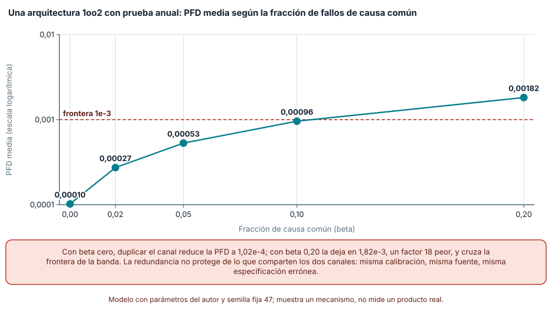
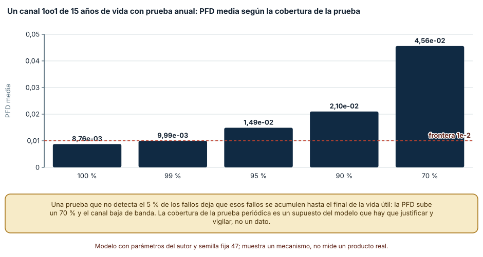

← SE-445 — Riesgo, peligro y seguridad funcional: HARA, FMEA, FTA y STPA · ↑ Parte 37 · 📚 Índice completo · 🌐 Portal · SE-447 — Automoción: ISO 26262 y niveles ASIL →
Punto profesional y fundamento pedagógico
Punto profesional. La clase existe para que entiendas qué significa, en números y en proceso, que una función de seguridad tenga un nivel de integridad, y qué hay que hacer para sostener esa afirmación. IEC 61508 es la norma genérica de seguridad funcional de sistemas eléctricos, electrónicos y electrónicos programables: la mayoría de las normas sectoriales (ferrocarril, procesos industriales, maquinaria, automoción) la toman como base o la imitan. Quien la ignora redescubre sus ideas con dolor; quien la aplica como lista de casillas gasta mucho sin reducir riesgo. El objetivo es leerla como un conjunto de ideas: el riesgo se reduce con funciones de seguridad concretas, cada una con un nivel de integridad que exige arquitectura, diagnóstico, proceso y evidencia proporcionales.
Por qué aparece aquí. Sigue a SE-445, que enseñó a enumerar peligros y estimar riesgo, y responde la pregunta siguiente: ¿cuánta reducción de riesgo debe aportar cada medida y cómo se demuestra que la aporta? Prepara SE-447 a SE-449, que son especializaciones sectoriales, y SE-451, donde la integridad de una función depende de que se ejecute a tiempo.
Error conceptual que debe corregir. Creer que el nivel de integridad es una propiedad del software o del componente. Es una propiedad de una función de seguridad en su contexto: el sensor, la lógica, el actuador y el proceso de prueba juntos. En el laboratorio, un canal único con prueba anual tiene una probabilidad media de fallo bajo demanda de 8,76 × 10⁻³ (banda del nivel 2); el mismo canal con una prueba periódica que deja sin detectar el 5 % de los fallos y 15 años de vida útil sube a 1,49 × 10⁻² (nivel 1): el componente no cambió, cambió la prueba.
Secuencia de aprendizaje. Antes de ejecutar, predices cuánto mejora la probabilidad de fallo duplicar el canal y cuánto empeora si los dos canales comparten una fracción de sus fallos. Después calculas tres arquitecturas con tres intervalos de prueba, barres la fracción de causa común, simulas vidas de canal para comprobar las fórmulas y estudias qué pasa con una prueba periódica que no cubre todo.
Evidencia de aprendizaje. integridad-de-la-funcion.md con la función de seguridad del *Horno de curado* (qué detecta, qué hace, en cuánto tiempo), la arquitectura elegida, la probabilidad media de fallo bajo demanda con sus parámetros, el intervalo de prueba y su cobertura, y la lista de supuestos del cálculo.
Límite de la conclusión. Las fórmulas son aproximaciones simplificadas de baja demanda con una tasa de fallo peligroso no detectado de 2 × 10⁻⁶ por hora fijada por el autor; la norma exige modelos más completos (fallos detectados, tiempo de reparación, restricciones arquitectónicas, capacidad sistemática) que aquí no se reproducen. El texto de IEC 61508 es de pago y no se reproduce: se describen ideas desde fuentes públicas.
Trazabilidad fuente → afirmación
| Fuente primaria u oficial | Afirmación que respalda | Lo que no prueba |
|---|---|---|
| IEC 61508-1, ficha de la norma en la tienda de IEC | Identifica la parte 1 de la norma de seguridad funcional (edición 2010) cuyo marco general se describe en la clase. | La ficha no contiene el texto ni las tablas de la norma. |
| Informe del vuelo 501 de Ariane 5 (ESA) | Muestra que la redundancia idéntica no protege de un defecto sistemático compartido. | No cuantifica ninguna fracción de causa común. |
| Leveson y Turner, Therac-25, IEEE Computer, 1993 | Caso en el que se retiraron enclavamientos de hardware y se confió en el software como única defensa. | No aplica ninguna norma, que no existía en esa forma. |
Python: random | Documenta el generador con semilla que usa la simulación de vidas. | No valida el modelo de fallos. |
Antes de empezar
Recupera lo aprendido en SE-445: dos canales independientes multiplican sus probabilidades solo si de verdad son independientes. La pregunta activa es: ¿qué dos «redundancias» de un sistema que conoces comparten, sin que nadie lo haya escrito, la misma fuente, el mismo software, la misma calibración o al mismo equipo?
Prerrequisitos
- Haber completado
SE-445. - Haber visto SE-440 — Disponibilidad, durabilidad y recuperación para la diferencia entre disponibilidad y probabilidad de fallo bajo demanda.
- Entender una tasa de fallo constante por hora y una distribución exponencial.
- Python 3.11 o posterior.
Problema auténtico
El limitador del *Horno de curado* debe cortar la potencia cuando la temperatura supera 250 °C. Se activa pocas veces: la mayoría de los días el lazo de control mantiene la temperatura y el limitador no hace nada. Un limitador que falló hace seis meses y nadie lo notó es peor que uno que no existe, porque da una confianza que no merece. La pregunta es cuánto debe fallar el limitador, como máximo, cuando se lo necesita, y cómo se sabe.
La clase calcula esa probabilidad para tres arquitecturas (un canal, dos canales donde basta uno, dos de tres) con tres intervalos de prueba, estudia el efecto de la causa común, verifica las fórmulas con una simulación de vidas de canal y mide qué ocurre si la prueba periódica no detecta todos los fallos.
Objetivos observables
Al terminar podrás:
- explicar qué es una función de seguridad, qué es un nivel de integridad y por qué es propiedad de la función y no del componente;
- distinguir el modo de baja demanda (probabilidad media de fallo bajo demanda) del de alta demanda o continua (frecuencia de fallo peligroso por hora);
- calcular la probabilidad media de fallo bajo demanda de un canal, un par 1oo2 y un 2oo3 con causa común, y situarla en su banda;
- explicar por qué la prueba periódica, su cobertura y la causa común dominan el resultado más que el número de canales;
- separar la integridad por fallos aleatorios de hardware (que se calcula) de la integridad por fallos sistemáticos (que se argumenta con proceso y evidencia).
Mapa conceptual
Ver la notación fuente del diagrama
flowchart LR
A[Riesgo sin protección] --> B[Reducción de riesgo requerida]
B --> C[Función de seguridad]
C --> D[Nivel de integridad]
D --> E[Arquitectura y diagnóstico]
D --> F[Proceso y evidencia sistemática]
E --> G[Probabilidad de fallo bajo demanda]
F --> H[Argumento de capacidad sistemática]
G --> I[Verificación y prueba periódica]
H --> ILa integridad tiene dos ramas que se verifican de forma distinta: el cálculo de los fallos aleatorios de hardware y el argumento de proceso para los sistemáticos. Una sin la otra no sostiene el nivel.
Temas y por qué importan
| Tema | Por qué cambia una decisión profesional | Evidencia mínima |
|---|---|---|
| Función de seguridad | Define qué debe detectar, hacer y en cuánto tiempo. | Especificación de la función |
| Niveles de integridad | Traducen la reducción de riesgo requerida en rigor. | Nivel asignado y su razón |
| Baja demanda y alta demanda | Cambian la métrica con la que se argumenta. | Tasa de demanda estimada |
| Arquitecturas 1oo1, 1oo2, 2oo3 | Redundancia con costo y con causa común. | PFD por arquitectura |
| Prueba periódica | Es la única forma de descubrir un fallo latente. | Intervalo y cobertura |
| Fallos aleatorios y sistemáticos | Se demuestran de manera distinta. | Cálculo y proceso |
| Causa común | Limita lo que gana la redundancia. | Fracción asumida y su razón |
Conceptos y decisiones
1. Función de seguridad: lo que se protege, no el dispositivo
Una función de seguridad es una acción que se realiza para llevar el sistema a un estado seguro o mantenerlo en él cuando ocurre una condición peligrosa. En el horno es «si la temperatura medida supera 250 °C o la puerta se abre, desconectar el calentador en menos de dos segundos». La función incluye el sensor que mide, la lógica que decide y el actuador que corta, y a veces también a la persona que actúa. Su nivel de integridad es el de la cadena completa: el eslabón más débil y las causas comunes entre eslabones deciden. Escribir la función con su tiempo de respuesta es parte de la especificación: una protección que actúa tarde (SE-451) puede ser correcta y no servir.
2. Niveles de integridad: una escala de reducción de riesgo
La norma define cuatro niveles de integridad de seguridad, del 1 al 4, de menor a mayor exigencia, cada uno con una banda de probabilidad de fallo peligroso. En el modo de baja demanda (la función se activa menos de una vez al año o como máximo el doble de la frecuencia de prueba, según la formulación habitual en la literatura técnica), la banda del nivel 1 va de 10⁻² a 10⁻¹, la del nivel 2 de 10⁻³ a 10⁻², la del nivel 3 de 10⁻⁴ a 10⁻³ y la del 4 de 10⁻⁵ a 10⁻⁴ de probabilidad media de fallo bajo demanda. Esas bandas aparecen en material público de autoridades y de universidades; no se reproduce la tabla de la norma. El nivel se asigna según la reducción de riesgo que se necesita (el riesgo sin protección, menos el riesgo tolerable) y no según lo que el equipo sabe hacer.
3. Baja y alta demanda: dos métricas
Si la función se pide poco, importa la probabilidad de que no actúe cuando se la pide: la probabilidad media de fallo bajo demanda (PFD). Si se pide con frecuencia o actúa de forma continua (el control de un freno), importa la frecuencia de fallo peligroso por hora, porque el fallo ocurre durante el uso y no queda latente. El limitador del horno es de baja demanda; el lazo de control de frenado de un vehículo es de alta o continua. Con demandas frecuentes se esperan más fallos peligrosos por año: con 1 demanda al año y una PFD de 8,76 × 10⁻³ se espera un fallo peligroso cada 114 años de operación de un horno; con 100 demandas al año, 0,876 por año. La PFD solo vale mientras el modelo de baja demanda se sostiene.
4. Arquitecturas: 1oo1, 1oo2 y 2oo3
«1oo1» es un canal; «1oo2» son dos canales donde basta uno para cortar (alta seguridad, más disparos falsos); «2oo3» son tres canales donde cortan si dos están de acuerdo (equilibra seguridad y disponibilidad). Con una tasa λ de fallos peligrosos no detectados y un intervalo de prueba T, las aproximaciones habituales son λT/2 para 1oo1, ((1 − β)λT)²/3 + βλT/2 para 1oo2 y ((1 − β)λT)² + βλT/2 para 2oo3, donde β es la fracción de causa común. Con λ = 2 × 10⁻⁶ por hora, T = un año y β = 0,05, el laboratorio da 8,76 × 10⁻³ para 1oo1, 5,30 × 10⁻⁴ para 1oo2 y 7,15 × 10⁻⁴ para 2oo3. Con prueba cada cinco años: 4,38 × 10⁻², 4,50 × 10⁻³ y 9,12 × 10⁻³. El intervalo de prueba pesa tanto como la arquitectura: pasar de un año a cinco empeora el 1oo1 cinco veces.
5. La causa común domina la redundancia
En un 1oo2 sin causa común (β = 0) la PFD es 1,02 × 10⁻⁴; con β = 0,05 es 5,30 × 10⁻⁴; con β = 0,20 es 1,82 × 10⁻³, dieciocho veces peor que sin causa común y fuera de la banda del nivel 3. La redundancia reduce la probabilidad de fallos aleatorios independientes; no reduce la de lo que los dos canales comparten. La defensa es diversidad real (otro principio de medición, otro equipo, otra tecnología), separación física y un valor de β argumentado, no elegido para que el número cierre. La simulación de 400 000 vidas con semilla 47 confirma las fórmulas: 8,62 × 10⁻³ simulado frente a 8,76 × 10⁻³ de la fórmula para 1oo1 y 5,11 × 10⁻⁴ frente a 5,30 × 10⁻⁴ para 1oo2 con β = 0,05.
6. La prueba periódica y su cobertura
Un fallo peligroso no detectado de un limitador es latente: está ahí hasta que una prueba lo encuentra o una demanda lo revela. Si la prueba cubre el 100 % de esos fallos, el canal «vuelve a nuevo» en cada prueba. Si cubre menos, el resto se acumula hasta el final de la vida útil. En el laboratorio, con un canal 1oo1, prueba anual y 15 años: cobertura 100 % da 8,76 × 10⁻³ (nivel 2); 99 % da 9,99 × 10⁻³, al borde; 95 % da 1,49 × 10⁻² (nivel 1) y 70 % da 4,56 × 10⁻². La cobertura de la prueba es un supuesto que se justifica con el método de prueba (¿se provoca la condición real o se simula con una señal?) y se vigila.
7. Fallos aleatorios y sistemáticos
Los fallos aleatorios de hardware (desgaste, defectos de fabricación) tienen una tasa que se estima y se calcula. Los sistemáticos (errores de especificación, de diseño, de software) están en el sistema desde su creación y fallan de la misma forma cada vez que se dan las condiciones: no tienen una tasa. La norma los trata con proceso: métodos de desarrollo y verificación proporcionales al nivel, que sustentan un argumento de que la probabilidad de un defecto sistemático residual es compatible con el nivel. Por eso decir «software de nivel 3» sin decir qué proceso lo respalda no es una afirmación comprobable: es un cálculo para el hardware y un argumento de proceso para el software.
Arquitecturas y prueba periódica
La primera medida calcula la probabilidad media de fallo bajo demanda de tres arquitecturas con tres intervalos de prueba.

Cómo leer la figura. Cada grupo es una arquitectura y cada barra un intervalo de prueba, en escala logarítmica; las líneas son las fronteras de 10⁻³ y 10⁻². Mira primero cuánto sube cada grupo al espaciar la prueba y cuánto baja entre 1oo1 y los redundantes. Dónde deja de valer: son fórmulas simplificadas con tasas del autor; ignoran fallos detectados, tiempos de reparación y tiempo de ejecución de la prueba. Sirven para entender el orden de magnitud y la sensibilidad, no para certificar una función.
Causa común
La segunda medida barre la fracción de causa común de un 1oo2.

Cómo leer la figura. El eje horizontal es la fracción de causa común y el vertical la PFD en escala logarítmica; la línea punteada es la frontera de 10⁻³. Mira primero el punto de beta cero y el de 0,20: un factor de unas dieciocho veces. Dónde deja de valer: β se elige; en la práctica es un parámetro que se argumenta con listas de comprobación de diversidad y separación, no una constante conocida. Un β de 0,05 sin justificación escrita es una afirmación sin evidencia.
Cobertura de la prueba
La tercera medida cambia la cobertura de la prueba periódica de un canal 1oo1.

Cómo leer la figura. Cada barra es una cobertura de prueba y su altura la PFD media a 15 años; la línea es la frontera de 10⁻². Mira primero cómo el 100 % y el 99 % casi coinciden y el 95 % ya cruza la frontera. Dónde deja de valer: el modelo asume que lo que la prueba no cubre se acumula hasta el final de la vida útil sin otra revisión; una sustitución de componentes o un mantenimiento mayor lo reinicia. Lo que se traslada es que la cobertura de la prueba es un parámetro del argumento, no un detalle.
Definiciones de trabajo
- Función de seguridad: acción que lleva al sistema a un estado seguro o lo mantiene en él ante una condición peligrosa.
- Nivel de integridad: escala de 1 a 4 que fija el rigor y la banda de probabilidad de fallo de una función de seguridad.
- PFD media: probabilidad media de que la función no actúe cuando se la pide (baja demanda).
- Arquitectura MooN: M canales de N deben coincidir para actuar (1oo2, 2oo3).
- β: fracción de los fallos peligrosos que afectan a todos los canales a la vez.
- Prueba periódica: comprobación que descubre fallos latentes y reinicia la exposición, con cobertura menor que 100 %.
- Fallo sistemático: defecto presente desde la creación del sistema, que falla igual siempre que se dan las condiciones.
Ejemplo mínimo
La probabilidad media de un canal y de un par, con la causa común, en pocas líneas:
lam, T, beta = 2e-6, 8760, 0.05 # fallos/hora, horas de un año, causa común
pfd_1oo1 = lam * T / 2
pfd_1oo2 = ((1 - beta) * lam * T) ** 2 / 3 + beta * lam * T / 2
print(f"1oo1: {pfd_1oo1:.2e} 1oo2: {pfd_1oo2:.2e}")La salida es 8,76 × 10⁻³ y 5,30 × 10⁻⁴. El segundo número solo mejora 16 veces el primero aunque el canal esté duplicado: más del 80 % de la PFD restante es el término de causa común.
Ejemplo profesional
*Escenario ilustrativo: las cifras y los resultados que aparecen en este ejemplo son supuestos de la narración, no mediciones.*
El equipo del *Horno de curado* necesita que la función de corte por sobretemperatura esté en la banda del nivel 3. Con un canal y prueba anual les sale en el nivel 2; duplicar el canal con el mismo sensor les sube a la banda pero con β = 0,05 se queda a un factor dos del borde. Un revisor pregunta por qué β es 0,05 y la respuesta («es lo que usa todo el mundo») no basta: se documentan los puntos compartidos (la misma fuente de alimentación, el mismo modelo de sensor, el mismo firmware) y se decide cambiar el segundo canal a un termostato mecánico de otro principio. Con esa diversidad el equipo puede argumentar un β menor, y escribe lo que habría que ver para que dejara de valer. Lo caro no fue calcular, fue defender el parámetro.
Práctica guiada
- Escribe la función de seguridad de un sistema tuyo con su condición, su acción y su tiempo de respuesta.
- Estima cuántas veces al año se pide esa función y decide si es de baja o de alta demanda.
- Ejecuta
python scripts/experiments_part37_a.py 566y compara tus predicciones de PFD con las medidas. - Calcula la PFD de tu función para tres intervalos de prueba y para tres valores de β; anota qué parámetro domina.
- Escribe qué evidencia respaldaría cada parámetro y quién la tendría.
Ejercicios
- Básico. Explica por qué un 2oo3 tiene una PFD mayor que un 1oo2 con los mismos canales y qué gana a cambio.
- Intermedio. Modifica el experimento para que la cobertura de la prueba sea 97 % y la vida útil 10 años; indica en qué banda queda un 1oo1 con prueba semestral.
- Avanzado. Diseña una estrategia de prueba para el limitador del horno que provoque la condición real (no una señal simulada) y estima qué cobertura obtienes frente a la prueba simulada.
Reto verificable
Entrega integridad-de-la-funcion.md y el código que calcula la PFD media de una función de seguridad de al menos tres arquitecturas y tres valores de β. Es válido si otra persona reproduce los valores, la comprobación por simulación con semilla fija y la sensibilidad a la cobertura de la prueba, y si el documento justifica cada parámetro con su fuente o lo declara como supuesto.
Caso conductor
El limitador del *Horno de curado* gana en esta clase un requisito cuantificado y una arquitectura. SE-447 toma la misma lógica en el sector del automóvil, donde la gravedad, la exposición y la controlabilidad fijan el nivel de rigor.
Preguntas frecuentes
¿Cuántos canales hacen falta para el nivel 3?
Depende del resto de los parámetros: de la tasa de fallo, el intervalo de prueba, la cobertura, la causa común y de las restricciones arquitectónicas que impone la norma según la proporción de fallos seguros y la tolerancia a fallos de hardware. Una arquitectura no «es» de un nivel: lo es la función con todo su contexto.
¿El software puede tener un nivel de integridad?
Se asigna a la función; el software que la implementa necesita una capacidad sistemática compatible con ese nivel, que se demuestra con proceso, métodos y evidencia. No hay una probabilidad de fallo por línea de código que se pueda sumar al cálculo del hardware.
¿La prueba periódica es una prueba de software?
Es una comprobación de la función: provoca la condición (o la simula de forma que ejercite la misma ruta) y verifica que el sistema actúe. Para el hardware descubre fallos latentes; para el software, lo habitual es que la verificación esté hecha antes del uso y la prueba periódica verifique que sigue íntegro (por ejemplo, con sumas de verificación).
¿Qué pasa si el modelo de baja demanda no vale?
Si la función se pide con frecuencia, hay que usar la métrica de alta demanda o continua (frecuencia de fallo peligroso por hora) y un análisis distinto: los fallos peligrosos ocurren durante el uso, no quedan latentes. Usar la PFD fuera de su condición de validez da números tranquilizadores y erróneos.
Fallo controlado y diagnóstico
Fallo. En una revisión externa se descubre que el limitador de un horno, calculado para el nivel 3, llevaba tres años con el relé de corte soldado. Nadie lo notó porque la lógica seguía respondiendo con normalidad y la temperatura nunca superó el límite.
Diagnóstico paso a paso. (1) El cálculo asumía una prueba anual que provoca la apertura del relé; el procedimiento real solo comprobaba que la lógica emitía la señal de corte. (2) La cobertura real de la prueba para el fallo «relé soldado» era cero. (3) Con 15 años de vida útil y cobertura efectiva de, digamos, el 70 %, el modelo da una PFD de 4,56 × 10⁻², del nivel 1. (4) Nadie había escrito la cobertura como supuesto, así que nadie la revisó cuando el procedimiento cambió.
Corrección. Se redefine la prueba para que verifique con una carga de prueba que el contacto abre, se registra la cobertura como supuesto con su dueño y se añade un diagnóstico en línea que lee el estado del contacto tras cada corte. La lección es que el número de un nivel descansa en supuestos de operación que dejan de cumplirse sin hacer ruido.
Errores comunes y cómo corregirlos
- Asignar un nivel al software como si fuera una etiqueta. Corrige asignándolo a la función completa y respaldando la capacidad sistemática con proceso.
- Suponer independencia entre canales. Corrige con un β argumentado y diversidad real.
- Calcular con una prueba que no se hace como se supone. Corrige midiendo la cobertura real del procedimiento.
- Usar la PFD con demandas frecuentes. Corrige cambiando de métrica cuando la demanda deja de ser baja.
- Elegir los parámetros para que el número cierre. Corrige escribiendo la fuente de cada parámetro o declarándolo supuesto.
- Olvidar el tiempo de respuesta. Corrige incluyéndolo en la especificación de la función.
Entorno y archivos clave
scripts/experiments_part37_a.py: funcióne566con las fórmulas, la simulación de vidas y el barrido de causa común y cobertura; se ejecuta conpython scripts/experiments_part37_a.py 566.- La semilla es 47 y la tasa de fallo 2 × 10⁻⁶ por hora; los resultados de la simulación varían a partir de la tercera cifra con otra semilla.
scripts/figures_part37_a.py: las tres figuras de la clase.- Solo la biblioteca estándar de Python 3.11 o posterior.
Seguridad, ética y accesibilidad
Un nivel de integridad es una promesa a las personas que usarán el sistema. Elegir un parámetro favorable para que el número cierre, o dejar sin documentar una prueba que no se hace como se supone, trasladan el riesgo a quien no lo sabe. La ética profesional aquí es concreta: cada parámetro tiene una fuente o una etiqueta de supuesto, y la persona que firma sabe cuál es cuál. La norma es de pago y no se reproduce; la clase no sustituye a su lectura para un trabajo real. Las figuras tienen texto alternativo completo y no dependen solo del color.
Puente hacia el trabajo con agentes
Un agente puede calcular la PFD de un conjunto de parámetros con rapidez y puede equivocarse en una fórmula sin que se note. Exígele que muestre la fórmula, los parámetros y la unidad de cada uno, y verifica con una simulación independiente como la de esta clase. Un agente que «ajusta» un parámetro para que el resultado entre en una banda está falsificando el análisis: el sentido correcto es partir de los parámetros respaldados y ver en qué banda cae.
Transferencia
Elige una función de seguridad de tu entorno (un corte, un bloqueo, una alarma que debe actuar). Escríbela con su condición, acción y tiempo. Calcula su probabilidad de fallo con dos arquitecturas posibles y dos intervalos de prueba y determina qué parámetro domina. Documenta cómo se probaría de verdad cada fallo latente y qué porcentaje cubriría tu prueba actual.
Evaluación y evidencia
| Criterio | Evidencia aceptable | Rechazo |
|---|---|---|
| Función de seguridad | Condición, acción, tiempo y estado seguro | «El sistema se protege» |
| Cálculo | Fórmula, parámetros con unidad y resultado | Un nivel sin cálculo |
| Causa común | β con su razón y diversidad descrita | β elegido para cerrar |
| Prueba periódica | Intervalo, método y cobertura medida | «Se prueba cada año» |
| Capacidad sistemática | Proceso y evidencia del software | Un nivel asignado al código |
Fuentes
- IEC. IEC 61508-1, ficha de la norma (norma de pago; no se reproduce su texto).
- Comisión de investigación. Informe sobre el fallo del vuelo 501 de Ariane 5. ESA, 1996.
- Leveson, N. G. y Turner, C. S. «An Investigation of the Therac-25 Accidents». IEEE Computer, 1993.
- Python Software Foundation.
random.
Límites y siguiente paso
Las fórmulas son simplificadas, las tasas y el valor de β son del autor y el texto de la norma no se reproduce; las bandas se describen desde material público y no se verificaron contra la norma. El siguiente paso, SE-447, especializa esta lógica para vehículos de carretera, con otro vocabulario y otra forma de asignar el rigor.
Glosario
| Término | Definición breve |
|---|---|
| Función de seguridad | Acción que lleva al sistema a un estado seguro |
| Nivel de integridad | Escala de 1 a 4 del rigor de una función |
| PFD media | Probabilidad de no actuar cuando se pide |
| 1oo2, 2oo3 | Arquitecturas de canales redundantes |
| β | Fracción de causa común |
| Capacidad sistemática | Evidencia de proceso frente a fallos sistemáticos |
← SE-445 — Riesgo, peligro y seguridad funcional: HARA, FMEA, FTA y STPA · ↑ Parte 37 · 📚 Índice completo · 🌐 Portal · SE-447 — Automoción: ISO 26262 y niveles ASIL →